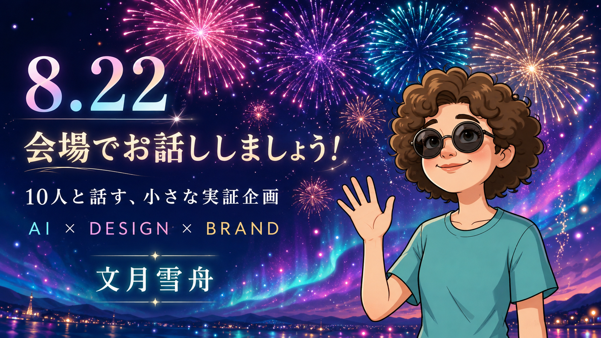
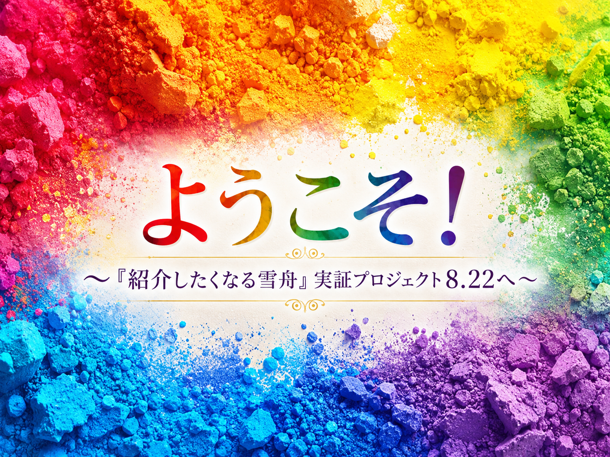
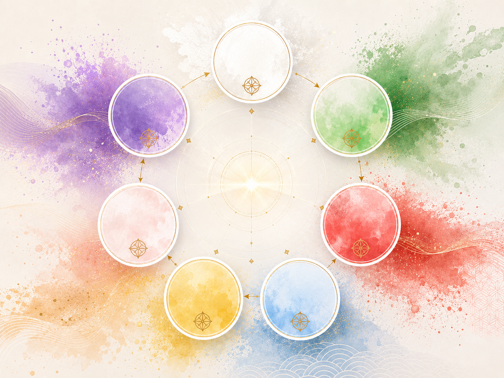
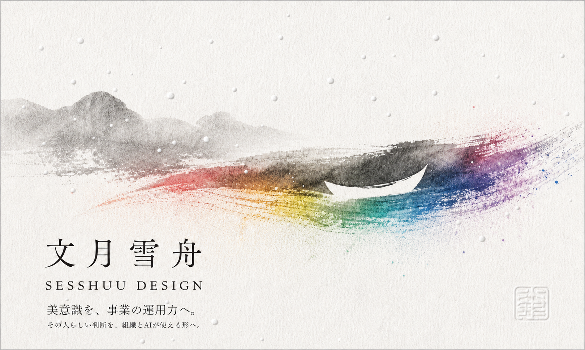

実は私は、「良い仕事」が「人に伝えたくなる体験」になる条件を調べています。
どの体験が「この人、誰かに教えたい」に変わるのか？
8.22イベントで出会う10人の方の結果から確かめてゆきます。
デザイナー、ライター、AI活用のブランド設計者。 見た目を整えるだけでなく、何を誰にどう伝えるか、 作ったあとにどう使われ続けるかまで考えています。
Profile 詳しいプロフィールへ・宿泊施設のブランド支援 — 競合調査からWeb・SNS設計まで、AIチームと試作
・契約書・NDAの整備 — AI法務チームでレビュー体制ごと構築
・このページ群 — Profile・事業ページ・本LPまで、設計から実装までひとりとAIで制作
この30秒は、その場でAIが答えを生成しているわけではありません。 問い・色・言葉・動きを役割ごとにAIと設計し、最後は雪舟自身が判断して実装しています。
戦略・相手・色・言葉・実装・記録。
このページは、それぞれ役割を分けたAIと一緒に設計しました。


さきほどの3色——じつは、この奥の暗がりから呼び出されたものです。
墨に五彩あり。黒は、すべての色を飲み込んだ状態です。
その黒の中を、もう少しだけ覗いてみませんか。
誰かの顔が浮かんだら、このページを渡してもらえたら嬉しいです。 今日は、お会いできてうれしかったです。
雪舟